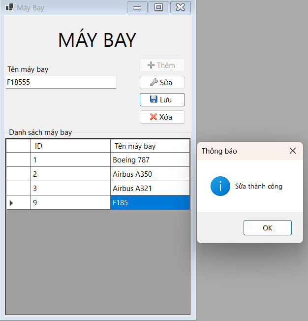
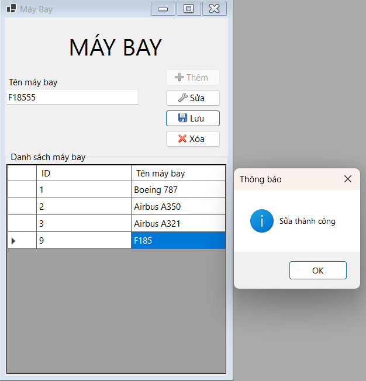

Máy bay
Hướng dẫn sử dụng màn hình Máy bay.
Thêm
Khi nhấn nút Thêm thì ô dữ liệu tên máy bay sẽ sáng lên và xóa trắng để người dùng thêm dữ liệu vào.Đồng thời nút Thêm sẽ bị mờ đi và các nút còn lại sẽ sáng lên. Nếu thêm thành công thì hệ thống sẽ thông báo thêm thành công.Sửa
Khi nhấn nút Sửa thì ô dữ liệu tên máy bay sẽ sáng lên để người dùng sửa dữ liệu đã nhập.Đồng thời các nút Thêm sẽ bị mờ đi. Nếu Sửa thành công thì hệ thống sẽ thông báo sửa thành công.Xóa
Khi nhấn nút Xóa thì hệ thống sẽ thông báo rằng người dùng có chắc sẽ xóa máy bay ở hàng đã chọn hay không?Nếu người dùng chọn Yes thì hệ thống sẽ xóa đi máy bay đó và không cập nhật ID đó lại . Ngược lại chọn No thì không thực hiện xóa.Lưu
Khi nhấn nút Lưu thì hệ thống sẽ nhận lệnh từ nút Thêm hoặc Lưu.Nếu là Thêm thì sẽ lấy dữ liệu ở các ô dữ máy bay liệu mà người dùng nhập vào để thêm vào ở sở dữ liệu. Ngược lại nếu là Lưu thì hệ thống sẽ lấy dữ liệu ở các ô dữ liệu để thay thế vào dữ liệu đã có ở cơ sở dữ liệu theo ID của máy bay đó.

Ngược lại nếu là Lưu thì hệ thống sẽ lấy dữ liệu ở các ô dữ liệu để thay thế vào dữ liệu đã có ở cơ sở dữ liệu theo ID của máy bay đó.
